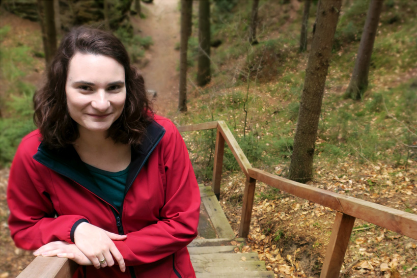

Terka Czechita
Vždy jsem si o sobě myslela, že jsem ryze „humanitní“ typ, takže jsem neváhala a šla studovat humanitní školu. Jako většina absolventů „fildy“ jsem se uchytila mimo obor (v kanceláři). Brzy jsem ale zjistila, že mezi papíry spokojená nejsem, a jelikož „hraní si“ v Excelu patřilo mezi mé nejoblíbenější činnosti, začala jsem se poohlížet jinde…
…a našla Czechitas. Zatím jsem úplně nadšená a těším se, co bude dál!